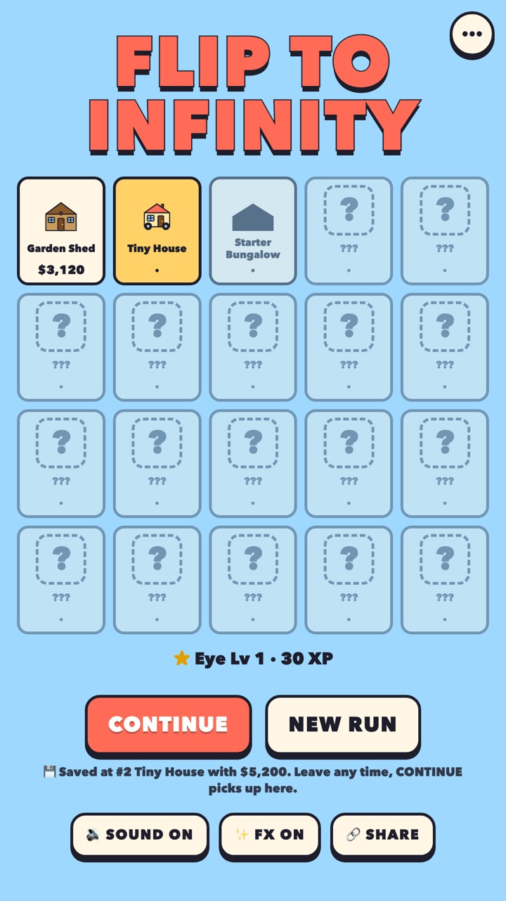
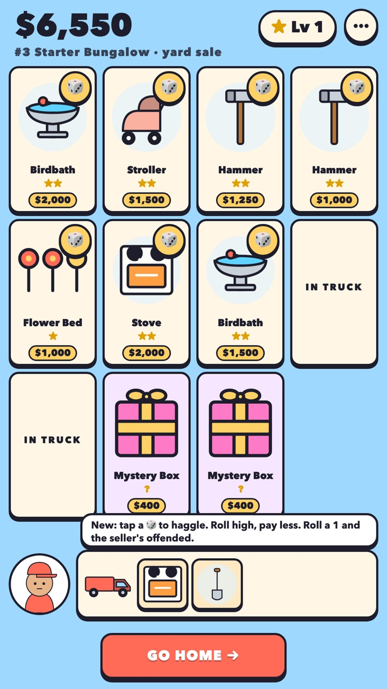
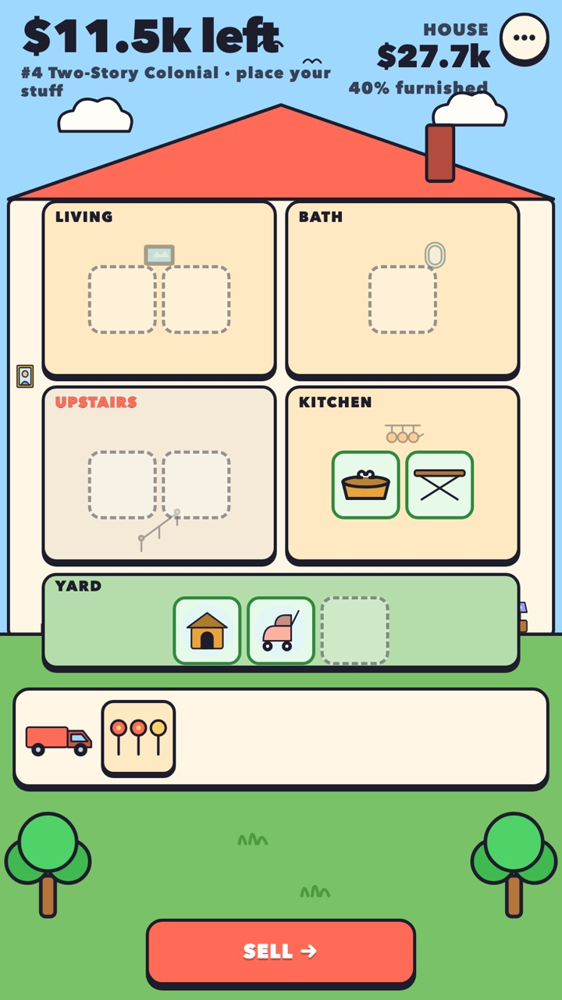
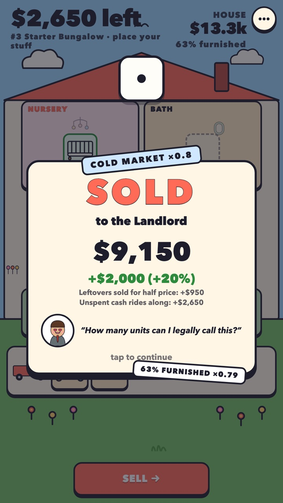
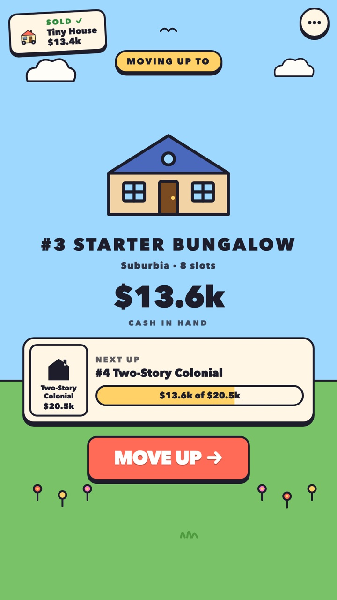

~/game-design / flip-it 01 of 03
Flip It
LIVEFREE214 PLAYERS · DAY ONEFlip to Infinity is a tap-only house-flipping game. Buy other people's junk at the yard sale, put it in the right rooms, sell the house, and move up a 20-house ladder that ends somewhere no realtor has a listing for. One verb, no ads, no accounts, no timers.





the loop, left to right – pick a house → buy junk → furnish → sell → move up. every visual is inline SVG drawn in code.
problem
Phone games ask for drag, aim, and timing, then pay for it with ads and timers. This one had to survive being played one-handed on a phone by someone half paying attention – so the constraint came first: one verb. Everything else in the design is downstream of tap.
built
- One resource, one number. Cash buys the junk, the junk furnishes the house, the house sells for more cash. Nothing else to track and nothing to explain – the first two houses ship with no instructions, and 81% and 82% of players clear them anyway.
- A mechanic every five houses. Haggle die at 3, Department Store at 6, road die at 11, an auction on every sale from 16, Hard Mode laps after the credits. A house is about a minute, so something new lands roughly every five.
- The economy is one pure object. Every constant lives in
PARAMS; the module has no DOM and no state. So bots can play thousands of runs, assert invariants, and grid-search the constants overnight. - Instrumented before it needed fixing. Anonymous, build-tagged events from the first session – which is how the 58% cliff at house three showed up, and why a tutorial, a simpler gate, and a re-spaced ladder shipped the same week.
- Ships as one file. Zero dependencies, every visual inline SVG drawn in code, all sound synthesized. The same
dist/index.htmlwent to itch, an artifact URL, and could drop into a native shell unchanged.
stack
- engine
- vanilla HTML/CSS/JS ES modules · zero dependencies
- art + sound
- inline SVG generated in code · synthesized audio
- economy
- pure
econ.js· bot simulator · grid-search tuner - analytics
- anonymous build-tagged events → Supabase · funnel by house
- distribution
- one
dist/index.html→ itch.io · phone or desktop
status
Live and free. Launched the evening of September 3rd with nothing but the itch listing; by the same hour the next day, 214 people had played and sold 1,269 houses between them. The whole game is one verb and one number, and that is the entire onboarding.